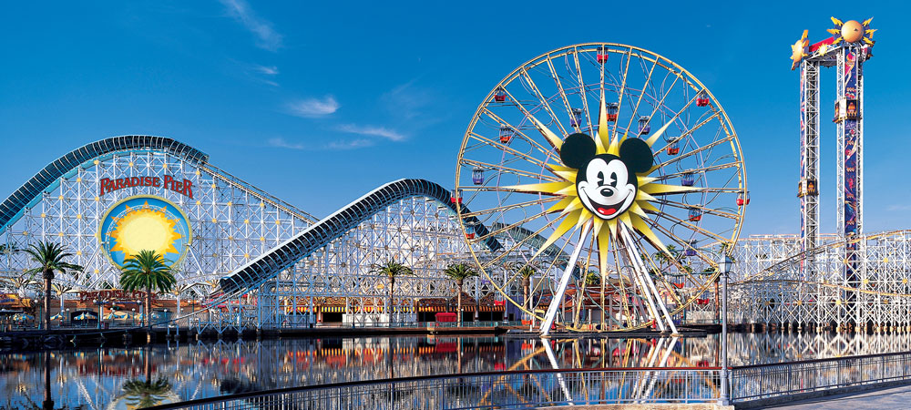

"It's a small world after all"
During Walt Disney's lifetime he started building many Disney themed parks and even as he passed his legacy still continued. There are many different parks all over the world which everyone of all ages can enjoy and venture into. From the rides to the breataking shows, the parks have it all! Located it Paris, Florida, Tokyo and many more places it brings all Disney fans together as one huge happy family. Most parks are still evolving and adding more attractions as more movies and characters are being introduced to the Disney universe. Even now they've started Disney Cruiseline, carrying families across the beautiful ocean as they discover their own Disney fun. Read on to find out more about each Disney park!
Disney Land was the first park that was ever opened in 1955 on July 17th in Anaheim, California. The two properties that are located there are Disneyland Park and Disney California Adventure. Walt Disney has walked through that park himself and approximately 750 million people have followed. There are three hotels and the Downtown Disney dining, entertainment, and shopping area. In 2012, Disneyland opened a section dedicated to the Cars universe after the Pixar film, "Cars" was blockbuster. Last year, a new superhero extentsion was added called " Guardians of the Galaxy Mission: BREAKOUT!" They are currently working on Star Wars dedicated attractions, Star Wars: Galaxy's Edge and crossing their fingers that it opens next year, 2019. Disneyland workers and imagineers have already set thier sights on a new hotel scheduled to open in 2021 called "Four Diamond Hotel" and is expected to be grand.

Opened on Oct 1,1971, it became the second Disney themed resot and a famous iconic destination. It has four themed parks including Magic Kingdom Park, Epcot, Disney’s Hollywood Studios, and Disney's Animal Kingdom. There are twenty eight working hotels and the Disney Springs area providing entertainment, dining and shopping to all those there. Recently, a new park has opened here called "Pandora- The World of Avatar in Disney. For their 50th anniversary in 2021, Rataouille and Guardians of the Galaxy and much more. There is also a plan for a Star Wars themed hotel there. They also want a new Minnie Van service and a Disney Skyliner transportation systems.
The park became the first theme park for Disney out of the USA, it was open on April 15, 1983. Tokyo Disneyland and Tokyo DisneySea are the two themed parks there. There are four hotels at this park and is home to Ikspiari dining, entertainment, and shopping.This resort was modeled after the original one in the USA. They have recently announced that the will have a special section in Fantastyland dedicated for Beauty and the Beast. A new Big Hero 6 themed area is designated to an area in Tomorrowland. They are currently preparing for their 35th anniversary in 2018.
Being the number one attraction in Europe, over 320 million trips have been made to this park. Opening on April 12,1992 this park has two themed Disney parks including Disneyland Park and Walt Disney Studios Park. The Paris edition of Disney includes two convention centers, Disney Village which is a shopping complex, seven hotels and 27 hole golf course.In 2018, Disneyland Paris will be celebrating it's 25th anniversary. In the spring, they wiil hold a Festival of Pirates and Princesses. Following that, in summer, they are planning in having a Marvel Summer of Superheroes at Walt Disney Studios Park and opening a new hotel, The Art of Marvel.
Hong Kong Disneyland was the first Disney park made in China and opened on September 12th, 2005. More than 64 million guest has visited this location. In this location, it includes three hotels and the Hong Kong Disneyland Park. Since it's opening in 2005, there have been three more editions to this park, in 2011 it was Toy Story Land, in 2012 it was Grizzly Gulch and as of 2013 it was Mystic Point. Last year, a third hotel was opened, Disney Explorers Lodge. The first Marvel themed ride ever, Iron Man Experience was also opened in 2017. From 2018 to 2023, they hope to consturct an area dedicated to Marvel and Frozen.
It is the youngest park with it's opening date being June 16th, 2016. This one features the basic story telling and characters designed for the Chinese people. It is home to two hotels and a large area reserved for shopping, dining, and entertainment. More beautiful attractions include their lush gardens, Broadway-style theatre, interactive experiences and it's amazing Wishing Star Park. Their own Disney Pixar Toy Story Land is scheduled to be opened on April 26, 2018.